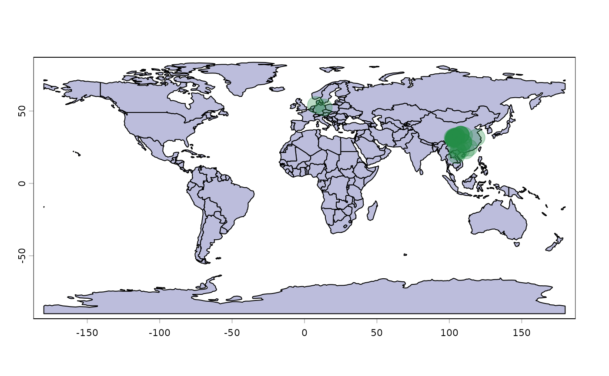

Downloads occurrence records from GBIF for a focal taxon, resolving the input name against the GBIF backbone taxonomy and querying by accepted taxon key — thereby capturing records linked to synonyms and infra-specific taxa (subspecies, varieties) in the same way as the GBIF website. Large requests are automatically split into spatial tiles, and a series of post-download filters can be applied to clean records for spatial analyses and range mapping.
Usage
get_gbif(
sp_name = NULL,
search = TRUE,
rank = NULL,
phylum = NULL,
class = NULL,
order = NULL,
family = NULL,
conf_match = 80,
geo = NULL,
has_xy = TRUE,
spatial_issue = FALSE,
grain = 100,
duplicates = FALSE,
absences = FALSE,
basis = c("OBSERVATION", "HUMAN_OBSERVATION", "MACHINE_OBSERVATION", "OCCURRENCE",
"MATERIAL_CITATION", "LITERATURE"),
establishment = c("native", "casual", "released", "reproducing", "established",
"colonising", "invasive", "widespreadInvasive"),
add_infos = NULL,
time_period = c(1000, 3000),
identic_xy = FALSE,
wConverted_xy = TRUE,
centroids = FALSE,
ntries = 10,
error_skip = TRUE,
occ_samp = 10000,
should_use_occ_download = FALSE,
occ_download_user = NULL,
occ_download_pwd = NULL,
occ_download_email = NULL,
verbose = TRUE,
...
)Arguments
- sp_name
Character. String with the species name. Scientific names at genus-species level are expected; fuzzy matching is available when
search = FALSE.- search
Logical. If
TRUE(default), use a strict GBIF backbone search and keep only species-, subspecies-, or variety-level matches. IfFALSE, use a more permissive search and optionally rely onrank,phylum,class,order, andfamilyto resolve ambiguous matches.- rank
Character. String giving the preferred rank to keep:
"SPECIES","SUBSPECIES", or"VARIETY". WhenNULL, rank priority is inferred fromsp_name.- phylum
Optional character. Phylum used to disambiguate alternative GBIF matches. Particularly useful for hemihomonyms.
- class
Optional character. Class used to disambiguate alternative GBIF matches.
- order
Optional character. Order used to disambiguate alternative GBIF matches.
- family
Optional character. Family used to disambiguate alternative GBIF matches.
- conf_match
Numeric. Confidence threshold between 0 and 100 for the GBIF backbone match. Default is
80.- geo
Spatial object. Used to restrict the query extent. Accepted classes are
Extent,SpatExtent,SpatialPolygon,SpatialPolygonDataFrame,SpatVector, andsf. The defaultNULLqueries the whole globe.- has_xy
Logical. If
TRUE(default), keep only records with coordinates. IfFALSE, keep only records without coordinates. IfNULL, keep all records.- spatial_issue
Logical. If
FALSE(default), keep only records without geospatial issues. IfTRUE, keep only records with geospatial issues. IfNULL, keep all records.- grain
Numeric. Study grain in kilometers. Default is
100. The value is used to filter records bycoordinateUncertaintyInMetersand by the number of reported coordinate decimals.- duplicates
Logical. Should duplicate records be kept? Default is
FALSE.- absences
Logical. Should absence records be kept? Default is
FALSE.- basis
Character. Vector of accepted
basisOfRecordvalues. Default excludes specimen-based records (e.g. herbarium sheets, museum specimens),"MATERIAL_SAMPLE"records, and records of unknown basis. See Details for the full list of accepted values, and a note on why"MATERIAL_SAMPLE"is excluded by default.- establishment
Character. Vector of accepted
degreeOfEstablishmentvalues. Default keeps native and broadly established records; records lacking this field are always kept regardless of the selected values. See Details for the full list of accepted values.- add_infos
Optional character. Additional GBIF occurrence fields to append to the default output columns. See Details for the default columns and where to find all available GBIF field names.
- time_period
Numeric. Year range to retain. Default is
c(1000, 3000). Records with missing years are kept.- identic_xy
Logical. Should records with identical longitude-latitude pairs be kept? Default is
FALSE.- wConverted_xy
Logical. Should records that appear to be incorrectly converted from degree-minute notation be kept? Default is
TRUE. IfFALSE, an approximate version ofCoordinateCleaner::cd_ddmm()is applied.- centroids
Logical. Should records located on raster centroids be kept? Default is
FALSE. IfFALSE,CoordinateCleaner::cd_round()is used.- ntries
Numeric. Number of download attempts before giving up after GBIF or
rgbiferrors. Default is10.- error_skip
Logical. If
TRUE, return an empty result when all download attempts fail.- occ_samp
Numeric. Maximum number of GBIF occurrences sampled per geographic tile. Default is
10000.- should_use_occ_download
Logical. If
TRUE, usergbif::occ_download()instead ofrgbif::occ_search(). This requires GBIF credentials. Default isFALSE.- occ_download_user
Character. GBIF username. Required if
should_use_occ_download = TRUE.- occ_download_pwd
Character. GBIF password. Required if
should_use_occ_download = TRUE.- occ_download_email
Character. GBIF email address. Required if
should_use_occ_download = TRUE.- verbose
Logical. Should progress messages be printed? Default is
TRUE.- ...
Additional arguments passed to
CoordinateCleaner::cd_round().
Value
A getGBIF object (a data.frame subclass) containing the
requested occurrence data. The object may also carry the attributes
filter_log, which records how many rows were removed at each
filtering step, and no_xy, which stores records without coordinates
when they are requested.
Taxonomic harmonization is reflected in the output columns rather than by
replacing all names with a single accepted label. In particular,
scientificName stores the record-level GBIF name, whereas
acceptedScientificName, acceptedTaxonKey, and
taxonomicStatus expose the accepted GBIF interpretation used by the
query.
Details
The function follows the same taxonomic matching logic used by the GBIF website. Internally, the input name is first resolved against the GBIF backbone taxonomy. If the matched name is a synonym, the download uses the corresponding accepted GBIF taxon key rather than the synonym key itself.
Querying by accepted taxon key means that occurrence records linked to
infra-specific taxa (subspecies, varieties) under that accepted name are
also retrieved, mirroring GBIF website behaviour. The acceptedTaxonKey
and scientificName columns in the output therefore reflect the
original GBIF record-level assignment and may refer to a subspecies or
variety rather than the species-level input name. Use
get_status(children = TRUE) beforehand to inspect which
infra-specific keys fall under the queried taxon concept.
The output preserves the original GBIF taxonomic fields for each record
rather than rewriting them to a single accepted name. In particular,
scientificName stores the record-level GBIF name, while
acceptedScientificName, acceptedTaxonKey, and
taxonomicStatus reflect the harmonized taxon concept used for the
query.
basis: available values (old and new GBIF vocabulary) are
"OBSERVATION", "HUMAN_OBSERVATION",
"MACHINE_OBSERVATION", "MATERIAL_CITATION",
"MATERIAL_SAMPLE", "PRESERVED_SPECIMEN",
"FOSSIL_SPECIMEN", "LIVING_SPECIMEN", "LITERATURE",
"UNKNOWN", and "OCCURRENCE". The default setting removes
specimen-based records and records of unknown basis. See
(here)
for a description of each category.
Records linked to non-taxonomic backbone entries (e.g. BOLD barcode
sequences) are typically registered under
basisOfRecord = "MATERIAL_SAMPLE". Because MATERIAL_SAMPLE
is not a reliable proxy for sequence-based records across all taxonomic
groups, and can also include unrelated bulk or environmental samples, it
is excluded from the default basis selection. Users who
deliberately include "MATERIAL_SAMPLE" in basis should
cross-check returned acceptedTaxonKey values against
get_status(children = TRUE) to identify any records linked to
non-backbone entries; see get_status() examples.
establishment: available degreeOfEstablishment values are
"native", "casual", "released", "reproducing",
"established", "colonising", "invasive",
"widespreadInvasive", "managed", "captive",
"cultivated", "unestablished", and "failing". The
default keeps native and broadly established records; records with no
degreeOfEstablishment information are always kept regardless of
the selected values. See
(here) for a
description of each category.
add_infos: the default output always includes "taxonKey",
"scientificName", "acceptedTaxonKey",
"acceptedScientificName", "individualCount",
"decimalLatitude", "decimalLongitude", "basisOfRecord",
"coordinateUncertaintyInMeters", "countryCode",
"country", "year", "datasetKey",
"institutionCode", "publishingOrgKey",
"taxonomicStatus", "taxonRank", and
"degreeOfEstablishment". Any additional field name accepted by the
GBIF occurrence API can be requested via add_infos; see the full
list (here).
If the requested extent contains many records, the query is fragmented into spatial tiles so that individual API calls remain manageable. Tiles are refined until each contains fewer than 10,000 records, which is faster and more robust than relying on a single large request.
Post-download filtering can remove records outside the study extent,
duplicated coordinates, absences, unwanted bases of record, records with low
spatial precision, suspicious coordinate conversions, and raster-centroid
records. The grain argument controls both coordinate-uncertainty
filtering and the minimum number of coordinate decimals that must be
reported.
Decimal filtering follows these thresholds:
if 110 km >
grain\(\ge\) 11 km, coordinates with at least 1 decimal are keptif 11 km >
grain\(\ge\) 1100 m, coordinates with at least 2 decimals are keptif 1100 m >
grain\(\ge\) 110 m, coordinates with at least 3 decimals are keptif 110 m >
grain\(\ge\) 11 m, coordinates with at least 4 decimals are keptif 11 m >
grain\(\ge\) 1.1 m, coordinates with at least 5 decimals are kept
References
Chauvier, Y., Thuiller, W., Brun, P., Lavergne, S., Descombes, P., Karger, D. N., ... & Zimmermann, N. E. (2021). Influence of climate, soil, and land cover on plant species distribution in the European Alps. Ecological Monographs, 91(2), e01433. doi:10.1002/ecm.1433
Chamberlain, S., Oldoni, D., & Waller, J. (2022). rgbif: interface to the global biodiversity information facility API. doi:10.5281/zenodo.6023735
Zizka, A., Silvestro, D., Andermann, T., Azevedo, J., Duarte Ritter, C., Edler, D., ... & Antonelli, A. (2019). CoordinateCleaner: Standardized cleaning of occurrence records from biological collection databases. Methods in Ecology and Evolution, 10(5), 744-751. doi:10.1111/2041-210X.13152
Hijmans, R. J. (2022). terra: Spatial Data Analysis. R package version 1.6-7. https://cran.r-project.org/package=terra
See also
get_status() to inspect the accepted name and synonym
mapping returned by GBIF; the rgbif package for more general GBIF
retrieval workflows; and the CoordinateCleaner package for more
extensive occurrence cleaning.
Examples
# \donttest{
# Download all worldwide observations of Ailuropoda melanoleuca, with:
# - 100km grain
# - after 1990
# - keeping duplicates and by
# - adding the name of the person who collected the panda records
obs.am <- get_gbif(
sp_name = "Ailuropoda melanoleuca",
grain = 100 ,
duplicates = TRUE,
time_period = c(1990,3000),
add_infos = c("recordedBy","issue")
)
#> |--------------------------------------------|
#> | Total number (all records) : 300 |
#> | Kept records : 66 |
#> |--------------------------------------------|
#> | Kept records according to parameters:
#> | spatial_issue = FALSE, has_xy = TRUE
#>
#> ...GBIF records of Ailuropoda melanoleuca: download starting...
#>
------------- #1 (100%..)
#>
#> ...Records (XY) filtering summary:
#> ---------------------------------------------
#> step removed remaining
#> Grain filtering 6 60
#> Absence records 0 60
#> Basis selection 22 38
#> Establishment selection 0 38
#> Time frame 0 38
#> Identical records 0 38
#> Raster centroids 0 38
#>
#> Initial records : 66
#> Total removed : 28
#> Final records (XY) : 38
#> ---------------------------------------------
#> Final records (no XY) : 0
# Extract borders
countries <- terra::vect(
system.file("extdata", "world_countries.shp", package = "gbif.range")
)
# Plot
terra::plot(countries, col = "#bcbddc")
graphics::points(
obs.am[,c("decimalLongitude","decimalLatitude")],
pch = 20,
col = "#238b4550",
cex = 4
)

# }